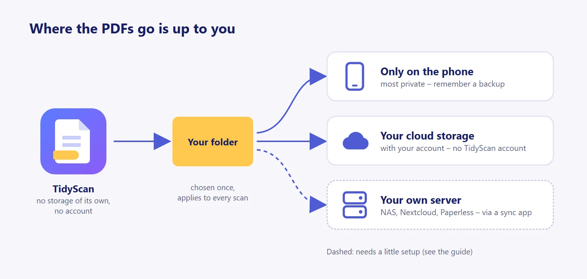

Scan documents without cloud: what really stays on your phone
Updated 18 November 2026 · Silvan, founder of TidyScan · 9 min read
First, so there's no wrong impression: I have no problem storing documents in a cloud myself. This isn't about «cloud good, cloud bad». It's about a simpler question: who decides where your scans end up, you or the scanner app? This guide shows what it means to scan documents without cloud with TidyScan, where the two exceptions are, and how, with a little skill, you can even get your PDFs onto your own server.
«Without cloud»: three questions that often get mixed up
Many scanner apps advertise «no cloud» or «offline». They don't always mean the same thing. It helps to keep three questions apart:
- Do I need an account? If you have to sign in, your scans are tied to a profile with the provider. Without an account the provider has nothing to link your documents to.
- Where is the processing done? Text recognition can run on the phone or on a server. If it runs on a server, the image of the page leaves your device, even if it is deleted afterwards.
- Where does the finished file end up? That is a separate question. A PDF can be on the phone, in your cloud storage or in the app provider's storage.
An app can answer «no account» to the first question and still send every page to its server. That's why it pays to know all three answers.
What TidyScan does on your phone, even in flight mode
TidyScan has no user account and no document storage of its own. These steps run on your device:
- Scan and crop: the scanner comes from Google as the ML Kit document scanner. It finds the edges, straightens the page and turns several pages into one PDF. According to Google, the entire document scanner flow operates on-device.
- Recognise text: the first page is read on the phone. Date, sender and document type come from it.
- QR bill and due date: the app reads the Swiss QR code on the device, including the amount. It finds a payment deadline in the QR code or in phrases like «payable by …».
- Name and file: the file name follows the scheme
YYYYMMDD_Sender_Type.pdf, the target folder follows your keywords. - Learn from corrections: if you change sender or folder, the app remembers it, locally on the phone.
For these steps you need neither internet nor a sign-in, and they cost nothing. So you can scan documents without cloud and without an account from day one.
Two honest limitations. First: Google provides the scanner and the QR reader through Play services. On the very first scan the phone downloads these components once; after that they run offline. Freshly installed and straight into flight mode, the first scan therefore won't work. Second: according to Google, these components send technical information for diagnostics and statistics, such as device model, Android version and error codes. TidyScan has no access to this data.

The optional AI: what goes out and what doesn't
TidyScan can also ask an AI what a document is about. Then the topic appears in the name too, such as «Knee-MRI» for a medical report. The feature is off by default and needs your explicit consent. If you switch it on:
| Goes to Google Gemini | Stays on your phone |
|---|---|
| a reduced image of the first page | the PDF with all pages |
| the recognised text of the first page | all further pages |
| names and keywords of your folders (so the AI can suggest a folder) | your other files and the learned corrections |
The request goes through the TidyScan server in Zurich. It forwards the content and doesn't store it; all that is stored there is an anonymous ID, your plan and your AI scan count. Gemini itself may also process requests in data centres outside Switzerland, for example in the US.
If you don't want the detour via the TidyScan server either, enter your own Gemini key: then the request goes straight from the phone to Google. And if you don't want to send anything at all, just leave the AI off; offline naming stays free and unlimited. All details are in the privacy policy.
What about the scanner in Google Drive?
A fair question, because the scanning itself is similar: both come from Google and can detect edges, crop and remove stains. The difference isn't in the scanning, but before and after it.
| TidyScan | Drive scanner | Apps with their own cloud | |
|---|---|---|---|
| Account needed | No | Google account | depends on the app, often yes |
| Where the file goes | the folder you choose, Google Drive included | Google Drive | the provider's cloud, export possible |
| Name and folder | automatic, by your rules | you choose when saving | depends on the app |
If your documents are in Google Drive anyway and you like naming them yourself, the Drive scanner is a good free option. TidyScan is worth it if you don't want to name and sort every scan by hand, or if you want to choose freely where the files go. The detailed comparison is in the guide Google Drive scanner or TidyScan.
The two aren't mutually exclusive, by the way: TidyScan can save straight into a Google Drive folder. That's how I do it myself: naming happens on the phone, and afterwards the file sits safely in my Drive.
Paperless-ngx: alternative or addition?
Paperless-ngx is an open-source document archive that you run on your own server or NAS. It recognises text, assigns tags and makes everything searchable. That's a different league from a scanner app: more powerful, but you need a server that keeps running and an afternoon to set it up.
So Paperless is less a competitor than a possible destination. It picks up new files from an inbox folder, the so-called consume folder, and processes them itself. TidyScan can feed that folder; how is in the next section. If you don't want to run a server, you don't need Paperless: a cleanly named folder covers the essentials for most households.
Scans to your own server, with a little skill
TidyScan has no built-in upload, and that's on purpose: the app saves into a folder, and what happens to that folder afterwards is up to you. That is exactly what makes your own server possible. Three ways, from simplest to most involved:
- Pick a Nextcloud folder directly. If the Nextcloud app is installed, your account usually appears in Android's folder picker. Choose a Nextcloud folder there when setting up the target folder. Whether that works smoothly on your device depends on the Android version and the app; try it with a test scan.
- Save on the phone, sync automatically. The robust way: TidyScan saves into a folder on the phone, such as «Documents/Scans», and a sync app moves new files on. FolderSync supports Nextcloud, WebDAV, SMB (Windows shares, many NAS) and SFTP, among others. Syncthing-Fork syncs directly between phone and PC or NAS, with no cloud in between; the app is available from F-Droid or GitHub, not the Play Store.
- On to Paperless-ngx. If the sync from option 2 points at the Paperless consume folder, every scan automatically lands in the archive. A meaningful file name helps there too when you want to find a document again.
One pitfall with option 3: Paperless removes files from the consume folder once it has taken them in. So set the sync to one direction only (phone → server). Otherwise the scans disappear from the phone as well.

Where your PDFs end up
On first start you choose a target folder. From then on:
- Only on the phone: maximum privacy. But backups are up to you; without one, the archive is gone with the phone.
- In your cloud storage, for example Google Drive: backed up and available on every device. It is a cloud, but yours, with your account, not a TidyScan account.
- On your own server: full control, but some setup (see above).
And if you ever uninstall TidyScan, only the app's own data is gone, meaning settings and learned corrections. Your PDFs stay in the chosen folder.
Check a scanner app yourself in five minutes
Whether an app really works without a cloud, you don't have to take anyone's word for, including mine. Here's how to test it yourself:
- Switch the phone to flight mode and scan a document. If the app still recognises and names it, it does the work on the device. (On the very first scan an app may need internet once to load components.)
- On first start, watch whether the app asks for an account.
- Read in the privacy policy what leaves the device and when, not just whether it says «privacy» in big letters.
- After saving, check in the file manager where the file actually is.
- Uninstall the app and check whether the PDFs are still there.
TidyScan is coming to Google Play soon.
Conclusion: offline is a property, not a slogan
Whether an app lets you scan documents without cloud comes down to three points: account, processing, storage. TidyScan answers the first two with «on your phone» and leaves the third to you: phone, your own cloud or your own server. If you don't need the AI naming, leave it off and you have an app that works completely in flight mode after the first scan.
Want to scan receipts for your taxes? There's the guide tax return documents. For Swiss invoices, see the guide Swiss QR bill, and every TidyScan feature is on the home page.
Frequent questions
Does TidyScan really work without internet?
Yes, once the first scan has run. Scanning, text recognition, QR code, due date and naming run on the phone. You only need internet once, so Google Play services can download the scanner, and for the optional AI naming.
Can I switch the AI naming off completely?
It is off by default. Without your consent no page goes to Google. If you switched it on, you can turn it off again in the settings at any time.
Does TidyScan upload my PDFs to a cloud?
No. TidyScan has no storage of its own and puts the PDFs into the folder you choose. If that folder belongs to a cloud service, that service's app uploads the file, to your cloud, with your account.
Can I save straight to my Nextcloud or NAS?
With the Nextcloud app installed, you can often pick a Nextcloud folder directly. More reliable: save on the phone and transfer automatically to your server or NAS with FolderSync or Syncthing-Fork.
Is there TidyScan for iPhone?
No, TidyScan is only available for Android for now.